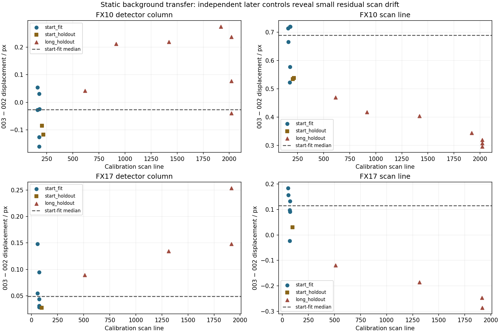
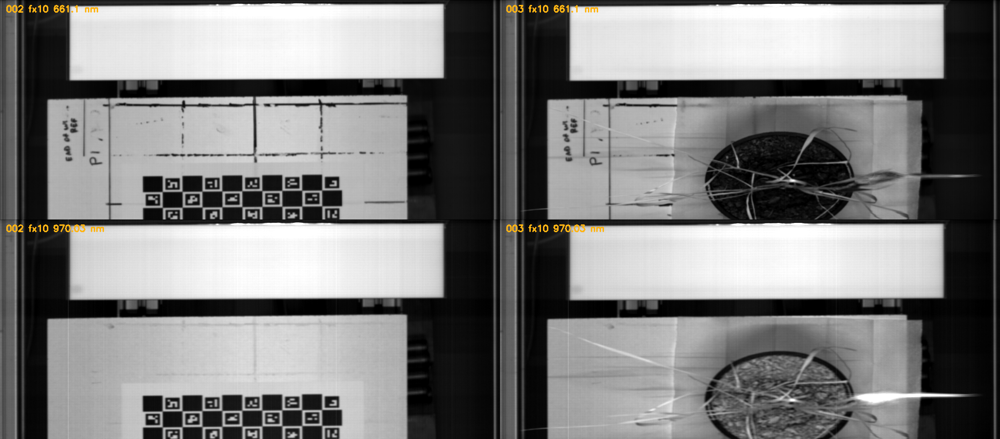
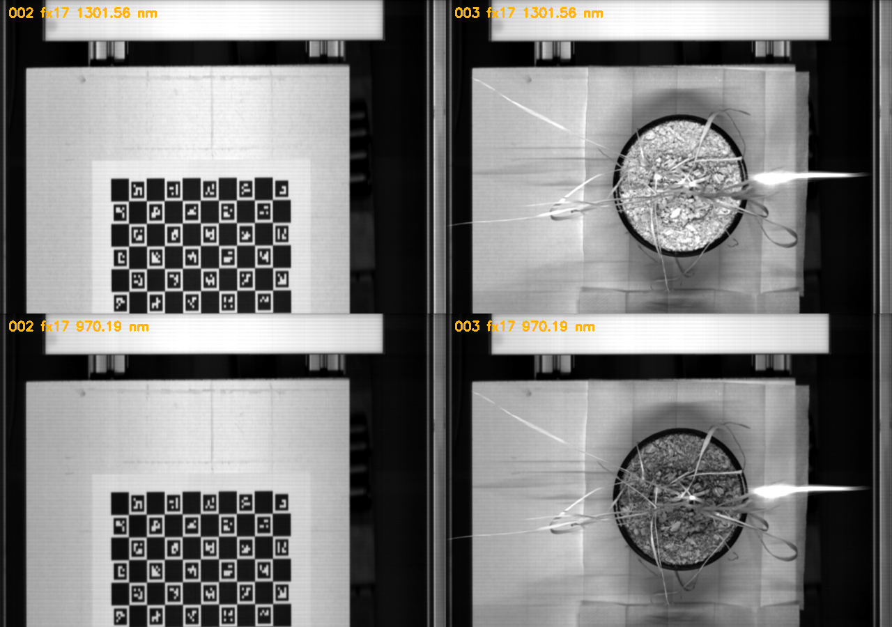
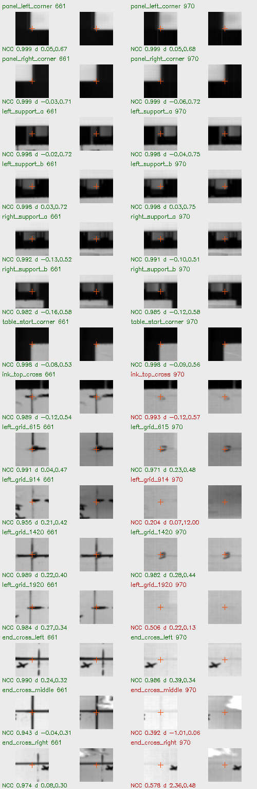
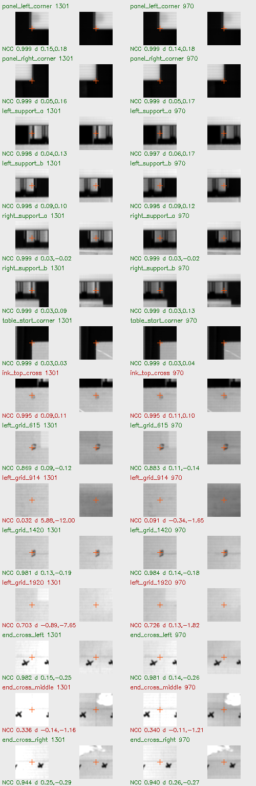

<script src="/research-assets.js"></script><!doctype html><html lang="en"><meta charset="utf-8"><meta name="viewport" content="width=device-width,initial-scale=1"><title>Measured calibration-to-plant scan transfer</title><style>body{font:16px/1.6 system-ui;background:#edf3f5;color:#162c38}main{max-width:1200px;margin:auto;padding:22px}section{background:white;padding:20px;border-radius:10px;margin:20px 0}img{max-width:100%;height:auto}table{border-collapse:collapse;width:100%}td,th{padding:8px;border-bottom:1px solid #cad6db;text-align:left}pre{white-space:pre-wrap;font:14px/1.6 system-ui}.crops{display:grid;grid-template-columns:1fr 1fr;gap:20px}a{color:#087188}@media(max-width:700px){.crops{display:block}}</style><main><p><a href="../index.html">Confirmed-board plane calibration</a></p><h1>Calibration scan → plant scan: measured static-image transfer</h1><section><p>The same white panel, mounting brackets and exposed table markings are present in the empty-board scan 002 and plant scan 003. Their raw image signals support a small, measured scan-coordinate transfer for both hyperspectral cameras.</p><p>Six preselected start controls estimate translation. Separate table features later in the recording are held out. Repeated second-band measurements test consistency at two wavelengths and are not counted as independent physical controls.</p><table><thead><tr><th>Sensor</th><th>Δ column, line / px</th><th>Start held-out n / RMS</th><th>Later held-out n / RMS / max</th></tr></thead><tbody><tr><td>FX10</td><td>-0.0262, +0.6890</td><td>2 / 0.171</td><td>7 / 0.388 / 0.457</td></tr><tr><td>FX17</td><td>+0.0493, +0.1155</td><td>1 / 0.088</td><td>4 / 0.353 / 0.451</td></tr></tbody></table><p>These are native image coordinates; the result does not solve the height-dependent mapping from an elevated leaf to the HSI ray.</p></section><section><p>A small residual drift remains. The constant translation is a supported approximation across the visible controls, not an assertion that the two scans are perfectly identical.</p></section><section><h2>Actual source images: 002 left, 003 right</h2></section><section><h2>Measured feature crops and exclusions</h2><p>Each pair is calibration left, plant right. Green candidates pass the fixed numerical gates and visual material-identity review; red candidates are rejected, commonly because ink becomes invisible or a plant changes the image.</p><div class="crops"></div></section><section><h2>Exact controls and scope</h2><p><a href="scan_transfer.json">Full transfer model and evidence</a> · <a href="static_controls.csv">All candidate controls</a> · <a href="sources.json">Recorded-plane fingerprints</a></p><pre>STATIC IMAGE TRANSFER, CALIBRATION 002 TO PLANTS 003

The same white panel, mounting brackets and exposed table markings are present in the empty-board scan 002 and plant scan 003. Their raw image signals support a small, measured scan-coordinate transfer for both hyperspectral cameras.

FX10: fit at 661.10 nm, six panel/support controls. Translation (column, line) = (-0.026187, 0.688984) pixels. Start hold-out n=2, RMS=0.171px; long-range hold-out n=7, RMS=0.388px, max=0.457px. A second recorded band repeats 10 usable features; displacement differences RMS=0.085px. These repeats are correlated.

FX17: fit at 1301.56 nm, six panel/support controls. Translation (column, line) = (0.049255, 0.115489) pixels. Start hold-out n=1, RMS=0.088px; long-range hold-out n=4, RMS=0.353px, max=0.451px. A second recorded band repeats 11 usable features; displacement differences RMS=0.022px. These repeats are correlated.

This is a locally initialized (±12 px) static-feature displacement check after direct visual alignment, not an unconstrained global matching test.
Subpixel maxima use parabolic interpolation of the raw template-correlation peak; decimal precision is not independent positional accuracy.
Small scan drift remains in held-out residuals. A single translation is an approximation, not proof of perfectly identical line motion.
Controls validate the visible static reference/table only and do not determine height-dependent camera rays.
D405 calibration-zero to plant reconstruction frame transfer is a separate problem.
Spatial wavelength dependence beyond these two sampled bands remains untested.
Q/Q0, panel reflectance and dark-reference uncertainty are unchanged.
No source arrays, reconstructed geometry, spectral assignments or previous results are modified.

Each observation, including rejected candidates, remains in static_feature_candidates.json and static_controls.csv. Crops show calibration on the left and plant scan on the right for each pair. Nominal anchor centres are template locations, not independently surveyed physical landmarks. Marker/panel detection errors and table-plane calibration errors must not be silently combined into a physical uncertainty estimate.
</pre></section></main></html>